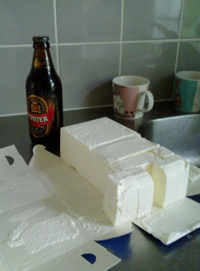

- Paketillinen vaniljajäätelöä
- Pullo Sinebrychoff Porteria eli Pirteriä
- Tummaa suklaata
1. Paloittele jäätelö ja ota Pirter esille.
2. Sekoita ainesosat. Vaahto katoaa kulhosta sekoittaessa.
3. Kaada Pirterlö lasiin ja raasta päälle tummaa suklaata. Nauti.
Lisensoitu Creative Commons Nimeä-Epäkaupallinen 1.0 Suomi -lisenssillä.